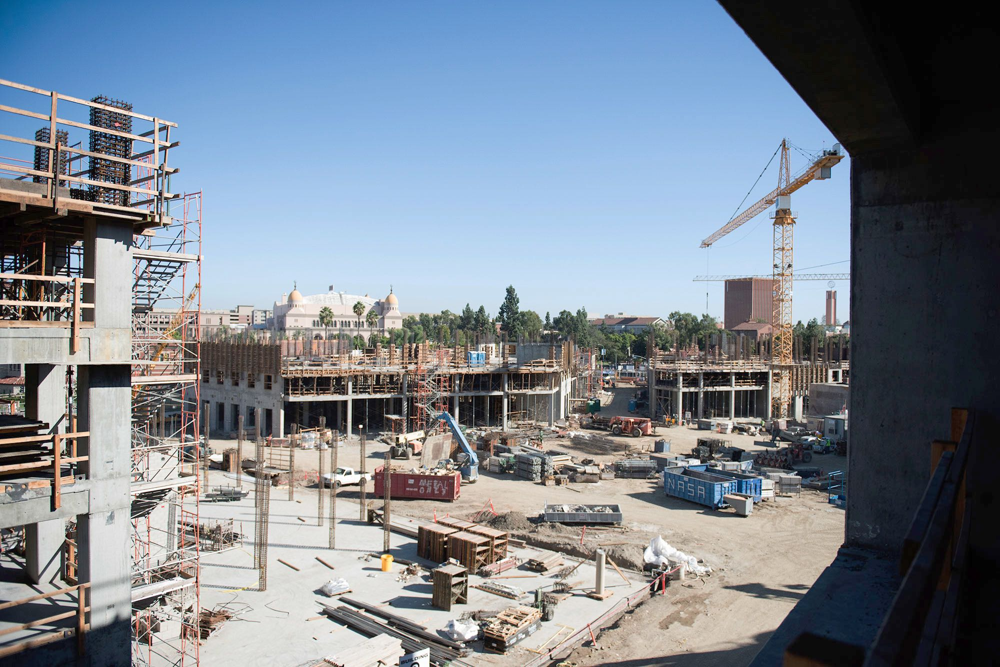

USC Village Rises
The $700 million project fuses students with the surrounding community.
By Danni Wang, Associate Managing Editor
On the corner of Jefferson and Hoover, half-constructed buildings are partially coated in brick, revealing steel skeletons. In the sunlight, Hathaway Dinwiddie construction workers file in and out of the site, preparing the USC Village in time for its fall 2017 launch.
The $700 million project, which features 1.2 million square feet of space, nine new residential colleges, a recreational center and fields, classroom spaces and multiple retail openings, aims to better support the lives of USC students.
“I think it’s going to be a community expansion from USC, where people in the community will want to go over and access the new amenities,” said Emily Sandoval, director of Residential Education. “With the recreational center and green spaces and all that’s being constructed, that’s why we call it the Village — because that’s what it is, a mini village.”
According to Sandoval, from the perspective of student life, the area targets upperclassmen students, specifically sophomores. Sandoval acknowledged that of the approximately 2,000 upperclassmen who will live in the Village, some still seek a sense of community, even though they might not be new to the USC setting.

“An area [Residential Education] could improve on is more of a focus on our sophomore, junior, senior student populations,” Sandoval said. “We’ve always focused on our upper-division students, but now we can put the spotlight on them as well as our first-year students … For those looking to build their circle, it doesn’t have to just stop in their student organizations — they can also look to their floor. We now get to enhance that upperclassman experience.”
In addition, the Village would look to better serve USC students’ needs. Along with transitioning to residential-college living, placing an emphasis on building greater relationships with those living within one building, resources would be more readily available to students. According to Sandoval, the Village would feature information stations in close proximity to living areas.
“We’re looking to build a mobile resource hub in collaboration with USC Housing.” Sandoval said. “In collaboration with our campus partners, such as career advisers or representatives from the Office for Health and Wellness Promotion, we hope to bring resources to where students live.”
Students, however, have criticized the lack of common space in the center. According to Craig Keys, USC Associate Senior Vice President for Civic Engagement and Government Relations, the Village plans include only one 800-square-foot community room that can be reserved for events and programs. Because the Village has been deemed a “residential-retail hub,” some have criticized the University’s greater emphasis on the retail aspect.
“Although there is a lot of space on campus where students can hold events now … You can never have enough space,” said Alicia Rivera, a sophomore majoring in psychology. “[Residents] also shouldn’t have to go to campus to have those event spaces, they should be close to them.”
Regardless, Keys has maintained that, given the emphasis on community, the space at the Village will be sufficient for student wellness purposes.
“The community-focused amenities at the Village provide space within the project for community purposes and benefits,” Keys said. “Community members will be able to shop, eat, bank and hold community meetings at the new Village.”
Outside of the project’s effects on the students, the nearly three-year long construction has influenced the surrounding non-USC community. According to the April 2015 USC State of the Neighborhood reports, local residents have voiced their anxieties about increasing housing prices and the unaffordability of housing around the University Park Campus in general. The reports stated that the University ignored the predominantly Latino and African-American residents in favor of a shift from a commuter-based campus to a residential-based one.
“Even though it will make public retail space available, it’s public retail space that is catering to students and the parents who are going to be visiting,” said Karen Tongson, a professor of English and gender studies who also studies suburban culture, in a interview with the Daily Trojan in 2015. “It doesn’t necessarily provide low-cost retail or resources that were available at the University Village when it was a mall.”
Feeling the direct effects of the new Village are those affiliated with the 32nd Street School, a K-12 magnet across the street from the construction site. Whereas the old Village served as a budget-friendly shopping and dining hot spot for students after school due to its proximity to their homes, the new Village has raised questions over affordability.
“Definitely a big part of it was the loss of a big shopping center. My family used to do all of our shopping at the Superior, and now we have to go to places further out.” said Cesar Alvarejo, a student at the 32nd Street School. “I feel like with [the new Village], it should be something that benefits the community as well. It might be [affiliated with] USC, but I hope they help the area as well because they destroyed kind of a big community place.”
Ultimately, however, Sandoval stressed the importance of fusing both the USC community with the surrounding neighborhood. By integrating retail spaces with student housing, the new Village would be the intersection between students and the residents of Los Angele, providing a common ground for these populations.
“I’m from Los Angeles, so I grew up hearing stories about how my dad used to ride his bike through USC’s campus and how he saw the Dodger Stadium being built. Hopefully, there will still be that experience for kids out there, children from the community that could ride their bikes through our open campus.” Sandoval said. “It creates an inviting experience for people in the community to come eat or grab a cup of coffee and do their shopping. The Village will become part of the community in that way.”
Photo attributions from top to bottom:
Photos (1, 2, 4, 5) by Joseph Chen
3, File Photo